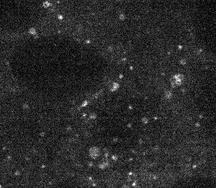

Documentation for Users¶
We recommend that users start by
Identifying a structure in the lookup table that looks most similar to the segmentation task that you are faced with. Once you have identified this structure, open the correspoinding Jupyter Notebook and follow the instructions in the notebook to tune the workflow for your particular task. Finally, after finalizing the algorithms and parameters in the workflow, modify batch_processing.py to batch process all data (file by file or folder by folder).
Step 1: Find the entry in the lookup table with most similar morphology to your data¶
List of “playgrounds” accomoanying the lookup table:
playground_st6gal.ipynb: workflow for Sialyltransferase 1
playground_spotty.ipynb: workflow for Fibrillarin, Beta catenin
playground_npm1.ipynb: workflow for Nucleophosmin
playground_curvi.ipynb: workflows for Sec61 beta, Tom 20, Lamin B1 (mitosis-specific)
playground_lamp1.ipynb: workflow for LAMP-1
playground_dots.ipynb: workflows for Centrin-2, Desmoplakin, and PMP34
playground_gja1.ipynb: workflow for Connexin-43
playground_filament3d.ipynb: workflows for Tight junction protein ZO1, Beta actin, Non-muscle myosin IIB, Alpha-actinin-1, Alpha tubulin, Troponin I, and Titin
playground_shell.ipynb: workflow for Lamin B1 (Interphase-specific)
For example, if your structure is localized to endosomes (such as Ras-related protein Rab-5A)
{kind=link}
Visually, it has similar morphology to peroxisomes (peroxisomal membrane protein PMP34). Thusm the most applicable Jupyter Notebook is playground_dots.ipynb
Step 2: Go to the Jupyter Notebook and tune the workflow¶
First, start your Jupyter Notebook App.
source activate segmentation
cd PATH/TO/aics-segmentation/lookup_table_demo
jupyter notebook
(Note: change the conda environment name and github repository path accordingly)
Now, your Jupyter should have started in your default brower and you can open playground_dots.ipynb
(A quick start guide on how executing a notebook can be found here)
Follow the instruct embedded in the notebook to tune the workflow for segmenting your images
Step 3: build a batch processing scripts using the segmentation workflow you just tuned¶
If you need to consistently segment more than a few images similar to the one you just experimented with, you can easily build a batch processing program following the steps below.
For example, you have finalize your segmentation workflow for Rab-5A.
Basic steps¶
duplicate the template file in
/aics-segmentation/aicssegmentation/structure_wrapper/seg_template.pyas/aics-segmentation/aicssegmentation/structure_wrapper/seg_RAB5A.pyOpen seg_RAB5A.py
Change the function name from
TEMPLATE_HiPSC_Pipeline()toRAB5A_HiPSC_Pipeline()on line 12insert you parameters and functions at the placeholders (searching
#ADD-HEREin the code). Meanwhile, make sure youimportall the functions you want to use. You can check the other files under structure_wrapper to see examples.Save the file.
go to
aics-segmentation/aicssegmentation/bin/batch_pipeline.pyOn line 43, change
'TEMPLATE': {'module': 'aicssegmentation.structure_wrapper.seg_template', 'class': 'TEMPLATE_Cardio_Pipeline'}into'RAB5A': {'module': 'aicssegmentation.structure_wrapper.seg_RAB5A', 'class': 'RAB5A_Cardio_Pipeline'}Process your data with run_toolkit.sh. (Make sure you change the file path to your data inside this script.)
cd /aics-segmentation/aicssegmentation/bin/
./run_toolkit.sh
Optional functions:¶
OF1: By default, only the final segmentation output will be saved into the specified output path. There is an option for you to output intermediate results or anything is a customized way. To do this, you can¶
Go to line 55 in /aicssegmentation/core/output_utils.py. Customize the function
template_output(). All intermediate results are saved inout_img_listwith their corresponding name inout_name_list. You simply select which variable to save using the corresponding default name or the name you prefer.Rename
template_output()into a specific name, likeRAB5_output().Go back to your
seg_RAB5A.pyline 9, change
from aicssegmentation.core.output_utils import template_outputinto your cutomized namefrom aicssegmentation.core.output_utils import RAB5_outputline 69, change
elif output_type == 'TEMPLATE':into a new name, e.g.elif output_type == 'MyLab':line 71, change
template_output( ... )into your new customized functionRAB5_output( ... )
Then, before you run your script
./run_toolkit.sh, make sure you set youroutput_typeas your new name, e.g.MyLab.
OF2: By defalt, your input image (orginal file, like .czi) will not be resized. But, when you process different images of the same intracellular structure and the images are of slighlty different resolution, you may need to first resize all the image into the same resolution as the images you tuned your parameters on. The reason is that parameters tuned on image of one resolution may yield different results on images of a very different resolution.¶
Case 1: Only xy resolution varies
Go to batch_pipeline.py line 151-156, give your case a name and a standard resolution. Assuming you are dealing with images of super resolution with xy-resolution as 0.23 micron x 0.23 micron /pixel, then you may use
if args.struct_name.endswith('_SuperRes'):
standard_xy = 0.23
In this case, your structure name in run_toolkit.sh needs to be 'RAB5_SuperRes'. (We treat 'RAB5' and 'RAB5_SuperRes' as two different tasks programaticaly.) Whenever your want to process an image, if XY=0.23 in run_toolkit.sh, then the image will not be resized. Otherwise, for example, XY=0.20, the image will be first resized in xy dimention.
Case 2: xyz resolution may all vary
In this case, you need to modify line 37-39 in your seg_template.py to do resizing in all dimensions into a standard resolution.